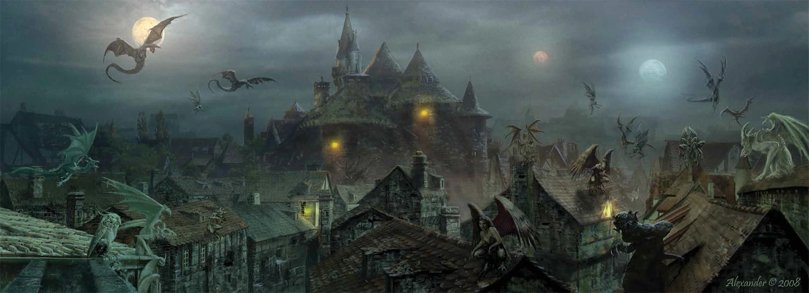
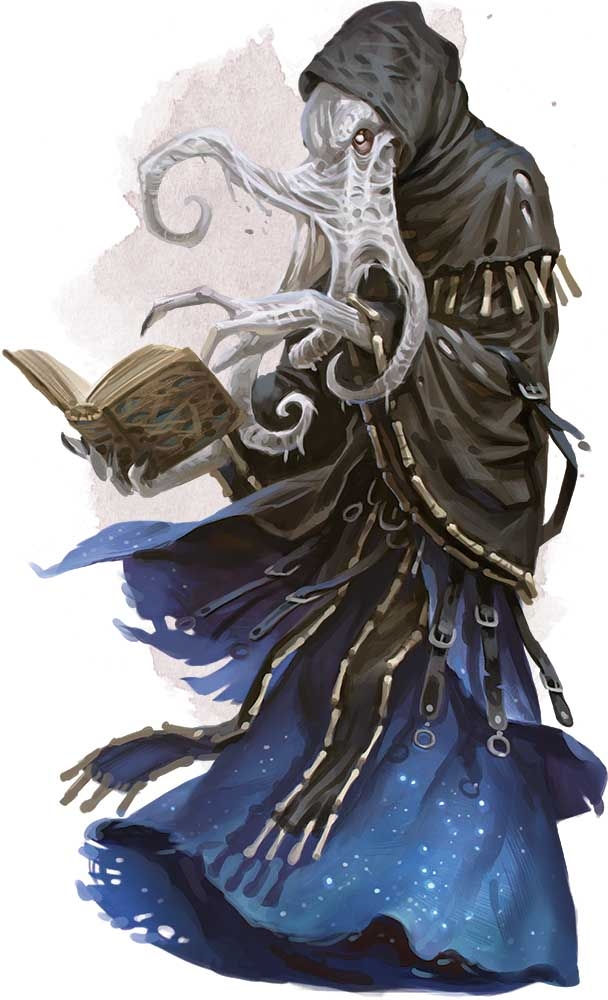
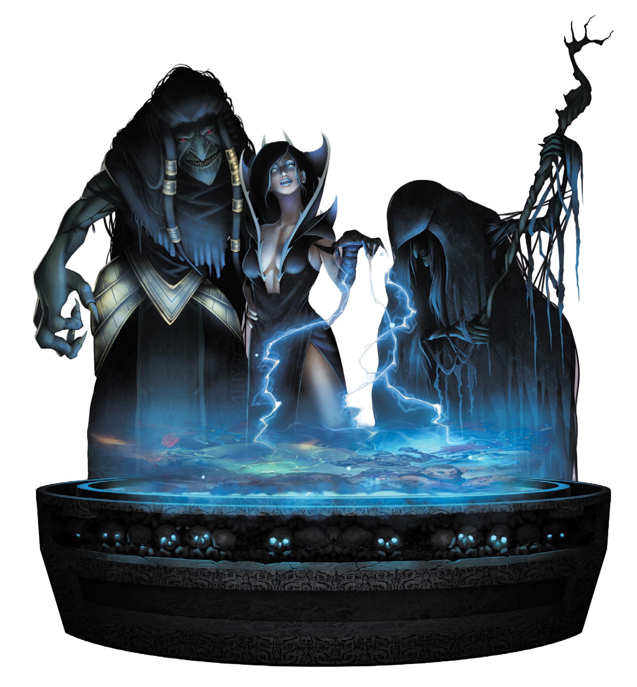
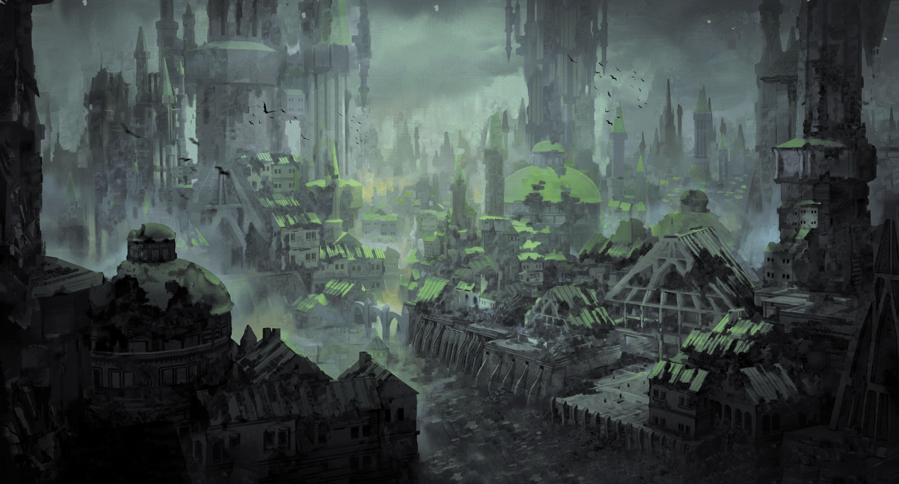

The Story So Far
Your World
You live in a town called Graywall. It's a frontier town in a country of monsters — but the monsters aren't all bad. Your neighbours are goblins, orcs, ogres, and weirder things. Three powerful sisters rule the country from far away. Lately, strange things are happening near town — dark plants growing where they shouldn't, people going missing. There might be a vampire involved. You're going to find out what's going on.
You don't have to know everything about the world, Eberron, or the big war that happened before you were born. If you have questions, just ask — but honestly, your characters wouldn't know most of that stuff either. The world gets bigger as your story goes on.
 Something old waits in the hills south of town.
Something old waits in the hills south of town.
DM Note
The younger one picks first. Once his character exists, send the older one the pitch plus whatever his brother picked — he'll build something complementary on instinct. He already plays D&D and is thinking about DMing, so he'll get it fast. Don't over-brief him — let the brothers figure out their dynamic at the table. The older one can handle a more complex class if he wants one.
Which Class?
Amir, you have the Player's Handbook — pick whatever you want from it. Race, class, all your choice. But some classes are easier to start with than others. Here's a quick guide:
Fighter
The simplest class in the game. "I hit things." Your turn is always clear, and it's hard to mess up. At level 3 you crit on a 19. Solid first character.
Easiest to learn
Barbarian
Even simpler than fighter. "I get angry and hit harder." Rage is one button — press it and go. Zero spells. Great if you don't want to think about rules.
Simplest in the game
Ranger
The tracker with an animal companion. Beast Master at level 3 — if you want a pet fighting alongside you, this is the one. You get a few spells too, but nothing overwhelming.
"I want a pet"
Rogue
The sneaky one. Sneak Attack hits hard when you set it up right. Great in Graywall's alleys and ruins. A bit more tactical — you'll need to think about positioning.
"I want to sneak"
Cleric
The healer. Heavy armour + mace means you can take a hit. Your turn is simple: "Hit with mace, Sacred Flame, or heal someone?" Three options, that's it. And in Graywall, a healer is a big deal.
"I want to heal"
Paladin
Fighter + heals + a cool oath. More moving parts, but if you like the idea of a holy warrior who smites evil, this is incredibly satisfying. Divine Smite is a dopamine hit.
"I want to be a knight"
DM Note — Steer Away From (for now)
For the younger one: full casters (wizard, sorcerer, warlock, druid, bard) are harder to run as a first character. Too many spell choices per turn, slot management, concentration tracking. If he insists on magic, cleric or paladin give him spells without the complexity. The older one can play whatever he wants — he'll be fine.
Pick Any Race
Any race from the Player's Handbook works in Graywall — this town has everything. A dwarf could be a trader from the Mror Holds. A tiefling fits right in with the monster-nation vibe. An elf might live in the Calabas. A halfling could be Bahiri's kitchen apprentice. A dragonborn is just another tough face in Bloodstone. Pick what looks cool — we'll figure out the backstory together.
DM Note — If He Picks Cleric
Life Domain is the easiest subclass. Heavy armour + mace means he's not squishy. Pre-pick his prepared spells: Healing Word (bonus action heal — the important one), Bless, Shield of Faith. Life Domain adds bonus spells automatically. Cantrips: Sacred Flame (attack) and Guidance (help friends). His turn becomes: "Hit with mace, Sacred Flame, or heal someone?" — three options, that's it. A healer in Graywall is also a big deal — the town's medical options are a medusa who turns you to stone until help arrives, or grist and hope. A kid who can close wounds with a prayer? The goblin quarter would love him.

Graywall. A city built where no city should be.Hey, Kais!
You already play D&D — you know how classes work. Borrow the Player's Handbook from Amir and pick anything, including full casters. No restrictions. Once Amir has his character, you'll get the pitch and his pick. Build something that works with his.
Your Characters
Once you've picked race and class, answer these about your character. Both of you.
Tell Your DM
Where in town did you grow up?
Bloodstone is the busy market district. The Calabas is the quieter human quarter. Sar Kuraath is the goblin neighbourhood — everything there is tiny.
Who's your best friend?
Could be a goblin, a young gnoll, an orc kid, a halfling cook — you pick.
What's your favourite spot in town?
The arena? The market? A rooftop? The ruins under the city?
What's something you're good at that isn't fighting?
Cooking? Running? Climbing? Fixing things? Talking your way out of trouble?
DM note: Write down their answers. These become plot hooks later. A best friend can be an NPC. A favourite spot can be where they find the first clue. A non-combat skill can save the day when swords won't.
What You Need to Know
This is what you'd know if you grew up in Graywall:
Your neighbours: Goblins, orcs, ogres, gnolls, harpies (they sing the news), gargoyles (they deliver mail), a medusa or two (don't stare). Everyone gets along, mostly. Bigger creatures have the right of way.
Food: There's free stew called grist. It's made from troll meat — the trolls grow it back, so don't feel bad. The best restaurant in town is run by a goblin chef called Bahiri, in the small-people quarter.
The boss: A mind flayer named Xor'chylic runs the town from a tower. Tentacle face, reads minds. He's fair, but you really don't want to annoy him.

He knows what you're thinking. Literally.The country: Droaam is run by three powerful sisters far away in the capital. They're ancient, they're powerful, and everyone respects them. That's all you need to know about them for now.

The Daughters of Sora Kell. They see everything. Even this.Your Town
You grew up here. These are the places you know.
| Place |
What's Cool About It |
| Bloodstone |
The arena where people fight monsters! Challenge rings in the street where anyone can dare anyone. The Bloody Market sells weird stuff from old ruins. |
| Sar Kuraath |
The goblin quarter — everything is tiny! Best food in town at Bahiri's. Free troll-meat stew (don't worry, the trolls grow it back). |
| The Calabas |
The "normal" quarter with a theatre that only shows plays that are BANNED everywhere else. |
| The Karda |
The fortress. The mind flayer lives here. Don't go unless invited. |
| Around Town |
Harpies sing the news from rooftops. Gargoyles deliver mail (tip: give them riddles). Bigger creatures always have right of way. There's a night hag who sells bottled dreams from a tent that appears and vanishes. |
Graywall Quarters — Reference DM Only
Detailed breakdown of the four quarters and local knowledge. Use this at the table to drop details as the kids explore.
| Quarter / Topic |
Key Locations |
Who's There |
What to Know |
| Bloodstone |
Arena, Challenge Rings, Bloody Market, The Labyrinth |
Minotaurs, ogres, gnoll hunters, tiefling merchants |
Largest quarter, red stone, everything happens here. Condemned fight for freedom in arena. Challenge rings at intersections for dares. Labyrinth inn in old mine tunnels. |
| Sar Kuraath |
Bahiri's, grist mill, clan halls |
Goblin clans (Bone Crows, Hammer-Knockers, Hidden Hands, Stonebreakers), kobolds |
Everything goblin-sized. Best food in town. Grist = renewable troll meat (stew, pie, sausage). Harpy sings workers to sleep at end of each shift. |
| The Calabas |
The Roar (plaza), Silenced Stage, Twilight Palace, Merry Marcher |
House Tharashk guards, human traders, exiled artists |
Foreign quarter, signs in Common, "normal" buildings. Banned plays at Silenced Stage. Jorasco healing house. Dragonne statue at center. |
| The Karda |
Last Tower (court+prison), Xor'chylic's tower |
Flayer Guard, Znir gnolls |
Walled fortress. Don't go unless invited. Public executions. Architecture feeds on fear. Mind flayer reads intentions. |
| Local Knowledge |
(everywhere) |
Harpies, gargoyles, Jabra, medusas |
News sung by harpies. Mail by garcoyles (love riddles). Bigger = right of way. Jabra (night hag) sells potions & dreams from tent. Dhakaani ruins underneath. |
References DM Only
Sources for Graywall, Droaam lore, and Eberron rules.
| Source |
Type |
Pages |
What's There |
| Exploring Eberron (Keith Baker) |
DMs Guild PDF |
pp.81–95 |
Droaam chapter: Graywall overview, grist economy, denizens, Daughters of Sora Kell, patrons |
| Frontiers of Eberron: Quickstone (Keith Baker) |
DMs Guild PDF |
pp.60–68 |
Graywall city detail: four quarters, businesses, NPCs, Xor'chylic, Znir gnolls |
| Chronicles of Eberron (Keith Baker) |
DMs Guild PDF |
pp.149–160 |
Vampires of Eberron, Lord Varonaen (p.156), weakness table (p.151), Grim Lords |
| Eberron: Rising from the Last War (WotC) |
Official |
Ch.4 |
Khorvaire nations, Droaam overview, Graywall mention |
| Player's Handbook 2024 (WotC) |
Official |
— |
Races, classes, spells — character creation |
| Dungeon Master's Guide 2024 (WotC) |
Official |
— |
Rules, encounters, magic items |
| Monster Manual 2025 (WotC) |
Official |
— |
Stat blocks for creatures in Droaam |
What They Don't Need Yet DM Only
Don't explain any of this unless they ask. Even then, give the short version first. If they dig deeper, you can expand — but let them set the pace.
The Last War (894–996 YK) — a century-long war between the Five Nations of Khorvaire over the shattered Galifar kingdom. Ended two years ago with the Treaty of Thronehold. Millions dead. The current year is 998 YK.
DM Note — The War and Droaam
Droaam is deeply connected to the war — just not as a battlefield. The Daughters of Sora Kell united the monster races of western Breland around 986 YK and declared Droaam a sovereign nation. Nobody recognised them. But House Tharashk brokered Droaam's monsters as mercenaries to the warring nations — ogre shock troops, troll berserkers, harpy scouts, gargoyle couriers. Droaam profited enormously. Graywall itself was founded by the Daughters as the border gateway, the controlled point of contact between monster nation and human civilisation. The town is only about 12 years old. It's not ancient — it's a startup. If the kids ask about the war, the short version is: "There was a big war between the human countries. It ended a couple of years ago. Droaam sold soldiers to all sides and got rich. Your town was built to make that trade happen."
The Treaty of Thronehold — the peace treaty that ended the Last War. Crucially, it did not recognise Droaam as a legitimate nation. Breland still officially claims the territory. This is a simmering political tension that could matter later in the campaign, but for now it's background noise — nobody in Graywall cares what Breland thinks.
The Mourning (994 YK) — the event that scared everyone into peace. An entire nation (Cyre) was destroyed overnight by an unknown magical catastrophe. Nobody knows what caused it. The former territory is now the Mournland — a dead, warped wasteland. This is the single most important event in recent Eberron history, and it's useful to have in your back pocket because it comes up in every Eberron source. But for the kids, it's a distant horror story — "a whole country just... died one day, and nobody knows why." Don't bring it up unless the campaign moves in that direction.
Dragonmarks / Houses — hereditary magical marks that grant specific powers. Twelve dragonmarked Houses control most commerce and services across Khorvaire (healing, transportation, banking, communication). The relevant one is House Tharashk (Mark of Finding) — they run the Calabas, they broker the monster mercenaries, and they're the closest thing Graywall has to legitimate foreign authority. When the kids encounter Tharashk, the simple version is "they're like a powerful guild that controls trade." The deeper version — that the Houses are essentially supranational corporations with more power than most governments — can wait.
DM Note — Tharashk in Graywall
House Tharashk is the intermediary between Droaam and the Five Nations. They have an exclusive contract to broker Droaam's mercenaries and resources. Their compound in the Calabas is a little embassy of civilisation, but they're not naive — Tharashk members working in Droaam tend to be tough, pragmatic, and morally flexible. A Tharashk half-orc who's spent years in Graywall is a very different person from a Tharashk heir in Sharn. Could be a useful NPC — someone who knows both worlds and has complicated loyalties.
The wider world — a kid who grew up in Graywall would have heard of Breland (the big nation next door), Sharn (the enormous city of towers, traders sometimes come from there), and maybe Karrnath or Thrane if they paid attention to travellers' stories. But they wouldn't know or care about the details. Keep it vague: "there are big human cities far to the east, and a dead country nobody goes to." The world becomes real when the story takes them there.
The Daughters of Sora Kell — Sora Katra (the schemer, wears faces), Sora Maenya (the brute, unstoppable), Sora Teraza (the seer, blind and ancient). They rule Droaam from the Great Crag. Every creature in Droaam fears and respects them. The kids know the Daughters exist and that they're in charge — that's the player-facing version. What the kids don't need: the Daughters' long-term political agenda (Droaam recognition, economic independence, military strength), the internal power dynamics between the three sisters, or the fact that Sora Teraza may be playing a much longer game than her sisters realise.
Blood of Vol, the Draconic Prophecy, Overlords — deep Eberron lore. The Blood of Vol is a religion focused on divinity within the self (and sometimes undead immortality). The Draconic Prophecy is a cosmic pattern that dragons and demons have been interpreting for millennia. The Overlords are imprisoned fiendish entities of world-ending power. None of this is relevant until it is. File it under "maybe in six months, maybe never."
DM Note — The Golden Rule
If it's not in Graywall and it's not happening to the kids right now, it doesn't exist yet. The world gets bigger as they explore it. Resist the urge to world-build at them — 11-year-olds don't want a lecture, they want to open the next door. Feed the lore through encounters, not exposition.
The Hook Preliminary

Player — Tell Them at Session 1
Dark vines have been growing on the south wall of town. They appeared overnight. The city watch pulled them down, but they grew back by morning. A goblin kid touched one and couldn't feel his fingers for a day. Strange flowers are blooming in the gutters — blood-red, beautiful, and wrong. And a few people who went into the southern hills haven't come back.
Let them investigate. The kids talk to people, follow the vines, find tracks. The trail leads south to an old ruin half-swallowed by dark vegetation. Inside: traps (plants, not mechanical), undead servants, and a garden that shouldn't exist underground — darkwood trees, luminescent flowers, and soil that smells sweet and wrong.
The vampire isn't there yet. First session is the garden, the clues, and the feeling that something intelligent is behind this. They find a journal, or a note, or a beautifully tended greenhouse in the middle of a ruin. Someone is cultivating this. Someone patient.
The Villain Preliminary — Subject to Change
Seriously, Players — Stop Reading
This will ruin the story. Your DM has something cool planned and you'll enjoy it more if you don't know what's coming. Go do something else.
DM Eyes Only
Inspired by Lord Varonaen (Chronicles of Eberron p.156) — an ancient elven vampire obsessed with plants. He creates hybrid flora using darkwood, blood, and necromantic energy. His "gardens" are alive in the worst way: vines that drain life, roses that charm, trees grown from corpses.
Your version: an old vampire who arrived in the Droaam borderlands decades ago. Presents himself as a travelling scholar — soft-spoken, courteous, endlessly curious about botany. He buys rare seeds from merchants in disguise. He asks about your favourite flowers. He remembers your name. He seems
kind.
He is not kind. He is a monster wearing patience like a coat. The garden is fed with blood. The beautiful darkwood trees? Grown from the bodies of the missing travellers — he plants them like bulbs. The luminescent flowers? They thrive on life force drained from living creatures through root systems that spread underground. The vines creeping up Graywall's south wall aren't an accident — they're infrastructure. He's extending his garden
into the town, slowly, root by root. The missing people aren't collateral damage. They're compost.
He knows exactly what he's doing and he enjoys it. But his mask is perfect — gentle, scholarly, a little eccentric. The kind of person you'd invite to dinner. He'd accept. He'd bring flowers. He'd compliment the cooking. And weeks later, something dark and beautiful would bloom in your garden where nothing was planted, and you'd never connect the two.
The Mask: Gentle. Curious. Remembers every name. Always smiling. Hands like ice. Would never raise his voice. The kids should
like this NPC at first — the betrayal hits harder that way.
The Truth: Utterly evil. Sees living creatures as raw material. Has been doing this for centuries across different regions — arrives, gardens, leaves when the locals catch on. Droaam is perfect for him because nobody's organised enough to notice a few missing travellers. He considers his work
art and the deaths a necessary part of the creative process. Not apologetic. Not conflicted. Just patient.
Weakness hook: Use the Eberron variant weakness table (Chronicles p.151). Pick something fun — maybe he
must accept any gift offered to him (Keeper's Greed), or he
can't re-enter a building he's left for 13 days (Never Look Back). Give the kids a way to be clever, not just strong.
 Escalation:
Escalation: To be planned once we know how much table time we have. The broad arc: strange plants → investigation → the vampire appears → someone goes missing → confrontation.
"Some gardeners plant in the dark."
Session Zero DM Only

The Pitch — the 30-second version above, just with the younger one first. See if he's excited.
Pick Race & Class — let him browse the PHB. Steer towards fighter/barbarian/ranger if he's unsure. If he picks a caster, pre-pick spells for the first sessions.
Build the Character — name, where he grew up, best friend, favourite spot. Use standard array or point buy — don't roll stats, it's simpler and avoids bad luck.
Draw the Map — sketch Graywall together on a piece of paper. Draw the outer wall (rough rectangle), then divide it into four quarters. Top-left: Bloodstone (the big, busy, dangerous one — arena, market, tanneries). Top-right: Sar Kuraath (goblin quarter — everything is small-sized, best food in town). Bottom-right: the Calabas (the "normal" quarter — signs in Common, human-ish buildings, theater). Bottom-centre: the Karda (the fortress — Xor'chylic's tower, jail, soldiers, don't go here). Draw the south wall at the bottom with squiggly vines climbing up it. Let him pick where he lives and add a detail ("there's a fountain" / "there's a stray worg cub"). Now it's his town.
Brief the Older One — send him the pitch + his brother's character. Let him pick from the full PHB — he can handle any class. Tell him the brothers should know each other in-world. Don't spoil the vampire.
Set Expectations — "We play for about an hour. You tell me what you want to do, I tell you what happens. If it's dangerous, you roll dice. If you die, you make a new character — but I'll try to be fair."
End with the Hook — describe the vines on the south wall. Ask: "What do you do?" If they're hooked, session 1 is sorted.
Session Zero — Amir
About to begin. Character creation, map drawing, setting the scene.
This section will be updated as the campaign progresses with notable events, player characters, and session notes.